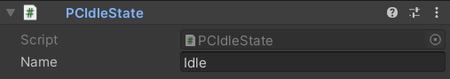
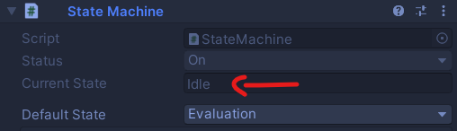

Criando Estados para um Ator
O que é um estado?
Um estado representa um grupo de ações que devem ser executadas enquanto uma condição específica do ator é atendida.
A estratégia de uso
Após ser corretamente criado, um script de Estado deve ser anexado ao mesmo GameObject da StateMachine. A máquina automaticamente irá reconhecer o estado usa-lodevidamente.
Além disso, a classe State é abstrata, assim como a classe Actor. Porque um estado é específico para um ator específico. Sendo assim, não faz sentidoque um estado exista sem que se saiba porquê ele está sendo criado.
O Código
Abaixo está o código base para um estado bem sucedido. Dê uma olhada nele e sinta-se livre para copiar e usar como quiser.
using System;
using System.Collections;
using System.Collections.Generic;
using UnityEngine;
using IndieGabo.FSM;
public class MySpecialState : State
{
#region State Methods
public void OnLoad()
{
// Register your transitions here
}
public void OnEnter()
{
// Executed at the same frame actor enters this state
}
public void OnExit()
{
// Executed at the same frame actor exits this state
}
public void Tick()
{
// Actor's Update()
}
public void LateTick()
{
// Actor's LateUpdate()
}
public void FixedTick()
{
// Actor's FixedUpdate()
}
#endregion
}
E, claro, há um Modelo de Script pronto para você em Create -> IndieGabo -> FSM -> New State.
Ok. Agora que vimos o código, vamos dar uma olhada em cada um de seus métodos. Todos eles são opcionais e você só precisa implementar os que você vai usar dentro do seu estado.
OnLoad()
Este método representa o momento em que a StateMachine carrega este script de State como um de seus estados. Então, é no State.OnLoad() que você deve colocar qualquer lógica que seja necessária para inicialização antes que a máquina comece a rodar.
// Some other code
Func<bool> Falling => () => actor.rigidBody2D.velocity.y < 0;
public void OnLoad()
{
// Register transitions and stuff
AddTransition(Falling, GetComponent<FallingState>());
}
// Some other code
O State.OnLoad() é o melhor lugar para registrar transições. Vamos dar uma olhada melhor em transições na seção Transitando entre estados.
Este método é chamado apenas uma vez no ciclo de vida da StateMachine.
OnEnter()
Este método é chamado o momento exato que a StateMachine define este script de State como seu estado atual.
// Some other code
public void OnEnter()
{
actor.animator.SetBool("isWalking", true);
}
// Some other code
O State.OnEnter() é o melhor lugar para iniciar animações, inicializar variáveis, propriedades e etc.
OnExit()
Este método é chamado exatamente antes que a StateMachine que tem este script de State como seu estado atual, transite para outro estado.
// Some other code
public void OnExit()
{
actor.animator.SetBool("isWalking", false);
}
// Some other code
O State.OnExit() é o melhor lugar para parar animações e resetar variáveis, propriedades e etc.
Tickers
Uma vez que um estado é definido como estado atual pela máquina, seus métodos “Ticker” serão chamados toda vez que os “Frame Handlers” do ator são executados.
São eles:
Tick(): Chamado toda vez que o método Update() do ator é chamado.LateTick(): Chamado toda vez que o método LateUpdate() do ator é chamado.FixedTick(): Chamado toda vez que o método FixedUpdate() do ator é chamado.
// Some other code
float xSpeed = 10.0f;
float xInput;
public void Tick()
{
xInput = Input.GetAxis("Horizontal");
}
public void FixedTick()
{
actor.rigidBody2D.velocity = new Vector2(xInput * xSpeed, actor.rigidBody2D.velocity.y);
}
public void LateTick()
{
if (xInput != 0) {
actor.camera.ZoomIn();
}
else {
actor.camera.ZoomOut();
}
}
// Some other code
Dica
Se você não está familiarizado com o método LateUpdate(), ele é chamado uma vez por frame após o Update()
Veja o ciclo de vida da FSM para informações visuais sobre os Tickers chamados.
Transitando entre estados
Existem duas maneiras de um estado transitar para outro estado:
Chamando o método
ChangeState()da Máquina.
Nota
Como visto na Documentação do Estado, todos os estados guardam referência à Máquina que eles pertencem. Portanto, acessar os métodos e propriedades da Máquina de dentro de um estado é fácil como acessar a propriedade State.machine.
// Some other code
public void FixedTick()
{
if (somethingWeirdHappened)
{
State newState = GetComponent<OtherState>();
machine.ChangeState(newState);
}
}
// Some other code
Registrando uma StateTransition dentro de seu
State.OnLoad()usando o métodoState.AddTransition().
Usando esta abordagem (que é altamente recomendada) a máquina, em cada “Frame Handler” do ator, avaliará se alguma condição de suas `transitions é cumprida, considerando suas prioridades. Caso alguma seja avaliada como verdade, ele irá automaticamente transitar para o estado alvo da StateTransition.
A StateTransition consiste em uma Condition, um State alvo e uma prioridade. Mas não é necessário que você instancie ela. Só chame o método State.AddTransition() e passe os 3 argumentos. Eu cuido do resto por você. Aqui está como você usa:
Func<bool> Condition => () => something > anotherThing;
State someState = GetComponent<SomeState>();
int priority = 1;
AddTransition(Condition, target, priority);
Mas, se você quiser, aqui está como uma StateTransition é instanciada e registrada:
Func<bool> Condition => () => something > anotherThing;
State someState = GetComponent<SomeState>();
int priority = 1;
StateTransition transition = new StateTransition(Condition, target, priority);
AddTransition(transition);
Note que para declarar uma Condition você DEVE proceder usando um Func<TResult> Delegar. Não se preocupe se você não está familiarizado com isso ainda. Tudo que você precisa saber é que a máquina irá chamar essa Condition() como um método (função) e seu contexto será avaliado como verdadeiro ou falso somente quando a máquina assim o fizer. No caso disso ser novidade para você, por enquanto, apenas siga a sintaxe no código abaixo cada vez que você quiser registrar uma StateTransition em um estado.
Para declarar o estado alvo, já que todos os estados são componentes anexados ao mesmo GameObject, você pode simplesmente usar o método GetComponent<State>().
Por último, a prioridade da máquina é lida de maneira descendente. O que significa que a maior prioridade que você dá como terceiro argumento, fará com que a Condition() da StateTransition seja avaliada antes. Fora isso, ela será lida como a ordem de declaração. O valor padrão da prioridade é 0.
// Some other code
// Example of conditions using delegate functions and recurring to lambda functions
// IMPORTANT!! It MUST be a delegate function. Check the docs for further understanding
protected Func<bool> Idle => () => actor.rigidBody2D.velociy.x == 0; // Here we take advantage on lambda functions so we do not need to declare a method.
protected Func<bool> Moving => () => actor.rigidBody2D.velociy.x != 0;
// Called to set the state able to be used by the Machine.
// Usually where you should register state transitions.
public void OnLoad()
{
// Example of how to add transitions
AddTransition(Idle, GetComponent<MovingState>()); // No priority means priority = 0
AddTransition(Moving, GetComponent<MovingState>(), 1); // Setting higher priority on third argument for this one. It will be executed before.
}
// Some other code
Nota
O State.OnLoad() é chamado apenas uma vez no ciclo de vida da Máquina. Significando que qualquer GetComponent<State>() (ou bem… qualquer lógica) dentro dele não será chamado múltiplas vezes.
O Inspetor
Para um estado simples, um nome simples. E é isso. Você pode definir um Nome para o seu estado usando o Inspetor do Unity, então você terá feedback visual quando inspecionar a máquina de estados.
Defina um nome:
A máquina de estados em ação exibindo o nome do estado atual:
Isso é tudo sobre criar um estado por enquanto. Me deixa mostrar um pouco mais sobre como usar nossa máquina de estados maravilhosa.